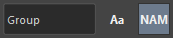

選択や名前の置換などを補助するツールです。
シーン上のノードを選択したり、名前を置換するなどの操作を補助するツールです。
主な機能は以下の通りです。
専用のメニューか以下のコマンドで起動します。 起動したツールは、シェフルの下部にドッキングされます。
import faketools.tools.selecter
faketools.tools.selecter.show_ui()
選択したノードを正規表現でフィルタリングします。

Ctrl キーを押しながら選択すると、該当したノードを選択から外します。
選択したノードをノードタイプでフィルタリングします。

Ctrl キーを押しながら選択すると、該当したノードを選択から外します。
選択したノードの親、子、兄弟を選択します。

すべて Maya のビュー上での選択と同じようにモディファイヤキーを使用することができます。
左と右側で選択したノードの名前を置換したノードを選択します。

すべて Maya のビュー上での選択と同じようにモディファイヤキーを使用することができます。
※ この機能は、settings.json の LEFT_TO_RIGHT 及び RIGHT_TO_LEFT の設定によって置換方法を変更することができます。
選択したノードの名前を置換して選択、リネーム、複製、オリジナルシェイプを複製します。

それぞれのテキストボックスに入力した文字列で名前を置換してコマンドが実行されます。→ ボタンを押すと置換の方向を入れ替えます。

選択したノードの名前を変更します。

@ で始まる文字列はアルファベットに変換されます。選択順に A から順番に割り当てられます。最初の文字列を変更したい場合は、@ フィールドの文字列を変更します。# で始まる文字列は数字に変換されます。選択順に 1 から順番に割り当てられます。最初の数字を変更したい場合は、# フィールドの文字列を変更します。~ で始まる文字列は選択したノードの名前に置換されます。それぞれのボタンを押すことで、特殊な機能を使用することができます。